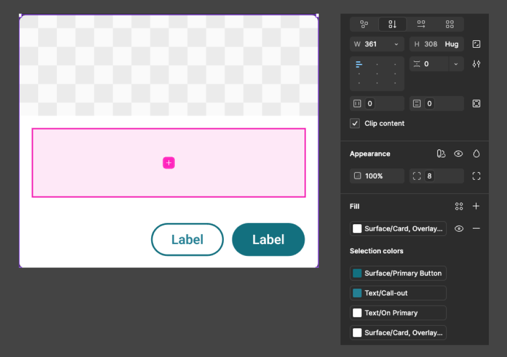
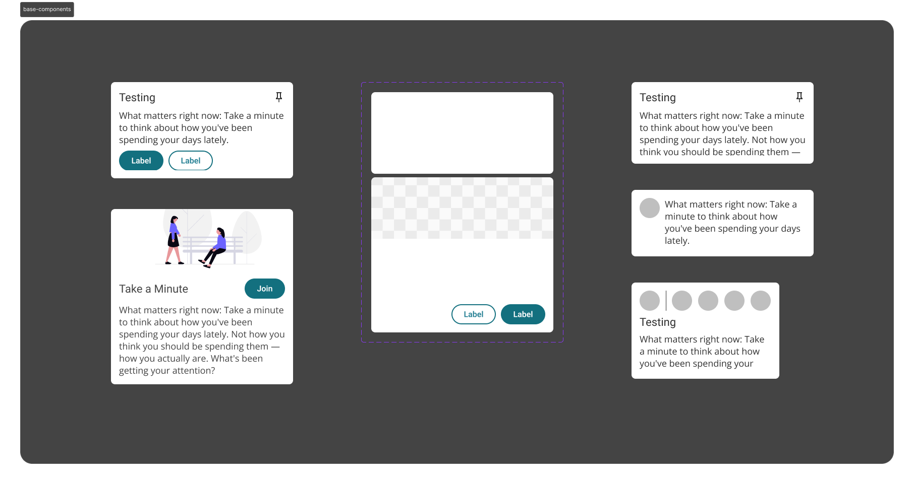
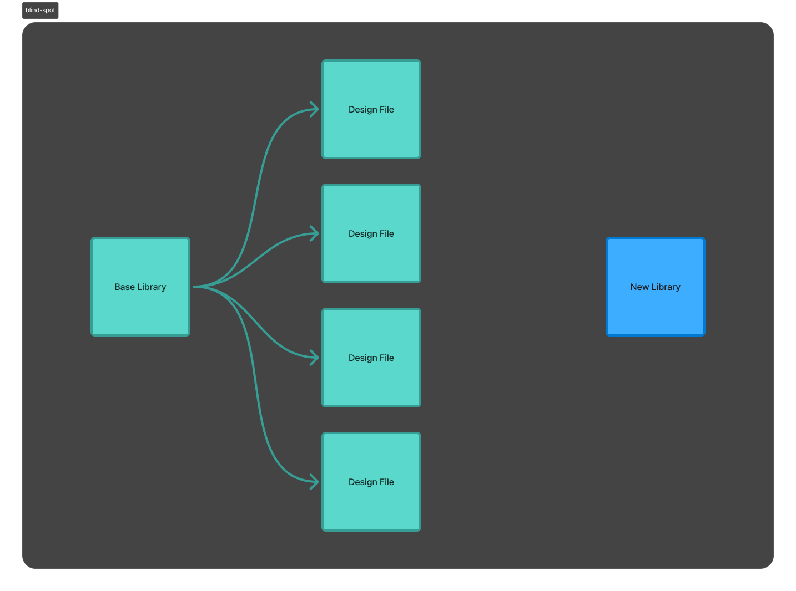
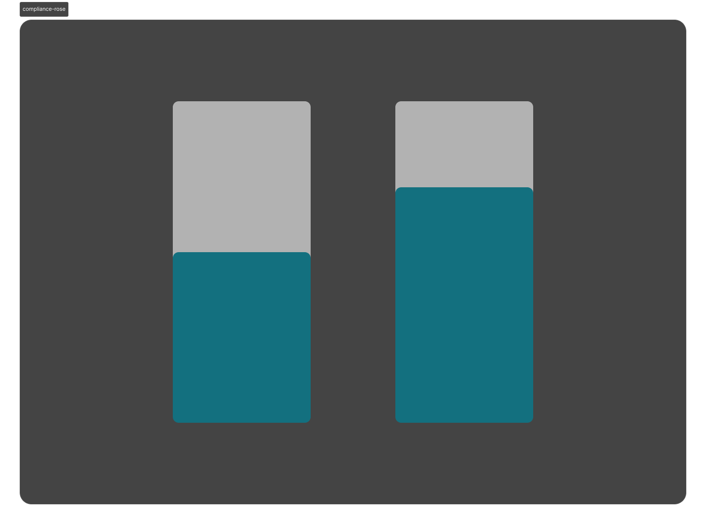
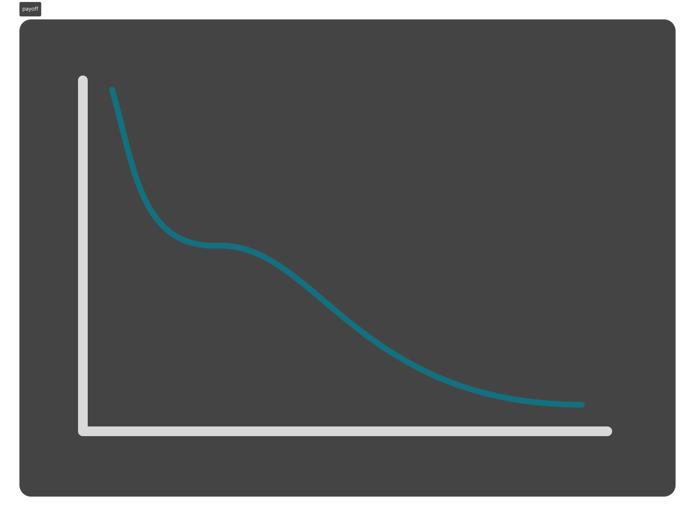

Problem
Lore is a startup that runs on speed — squads ship one-off flows constantly, nothing is built to last long.
The app was starting to feel less like one cohesive product and more like a patchwork — small inconsistencies were creeping in, and it was starting to look unprofessional. We ran a few design meetings trying to name the problem.
Decision
The org brought in a design systems engineer — and he was leaning toward a pure component-based library, the standard playbook.
I argued a pure component library would backfire: designers can’t modify components, so any variation means building a new one — and across a team of 8, that library balloons fast, each new component another thing to maintain. We needed flexibility without chaos.


Solution
My answer: tokens. Change one token, and every instance built on it updates with it — color, spacing, shadow, all of it. Cards could look completely different from each other and still stay consistent underneath, because they all pulled from the same source.

Blind Spot
I built the new system in a brand-new library instead of extending the old one’s lineage. It worked in isolation — but I’d unknowingly repeated the exact mistake every systems designer before me had made: build something powerful, then expect the whole team to just commit to it. A system nobody could adopt without breaking their workflow wasn’t the system. It was still just my system.

Designers couldn’t adopt it without breaking active workflows mid-project.
Implementation
In one week, I rebuilt the entire app in Figma inside the new library — a single “prime document” every designer could copy from and land near wherever they’d left off.
Compliance rose. The squad liked working in the new system.

It plateaued short of where it needed to be — something was still leaking designers back to old habits.
Setback
I kept finding old color styles showing up in files — some with six or more legacy libraries attached, all tangled together with no clear order of what was current. Manual design review and a dev-side crawler bot — grading squads on compliance — confirmed it was happening across squads.

Contamination crept back across the system.
I un-componentized the master components in the library with the worst accidental usage, expecting that to sever the link to the old library.
Un-componentizing didn’t break the child links — old color styles were still riding along, and error risk kept climbing.
Deleting the old libraries outright was on the table — but the org wasn’t ready to absorb that risk.
Cleanup
Designers needed to see contamination, not just be told about it — so I recolored every old color style and component neon red and republished the libraries.

Designers spotted the red instantly. Use of the old libraries plummeted.
Payoff
Three weeks later, I deleted 7 legacy libraries with zero business disruption — pulling the org over 90% compliance into a single tokenized system.
